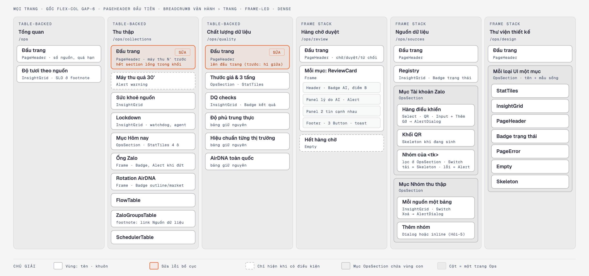
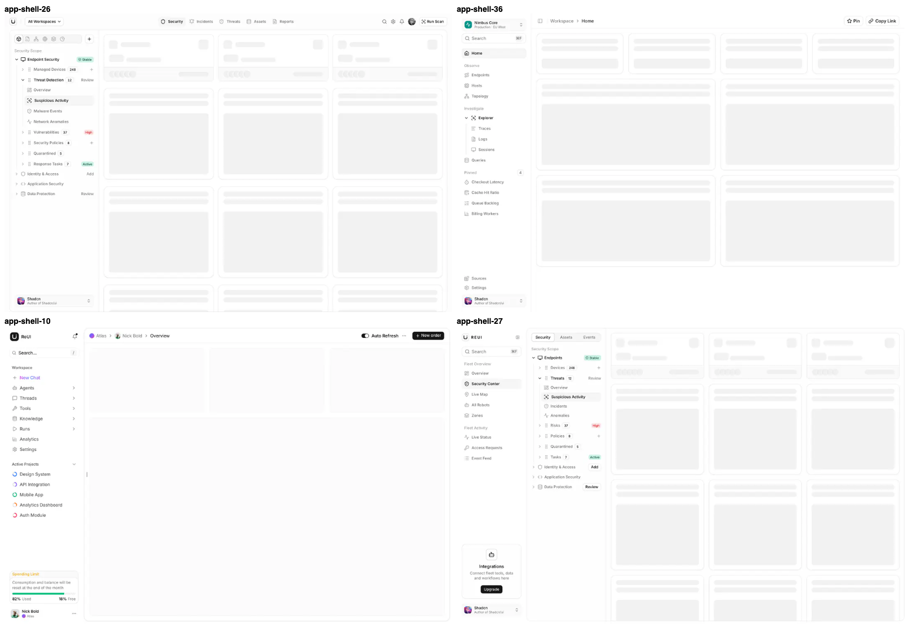
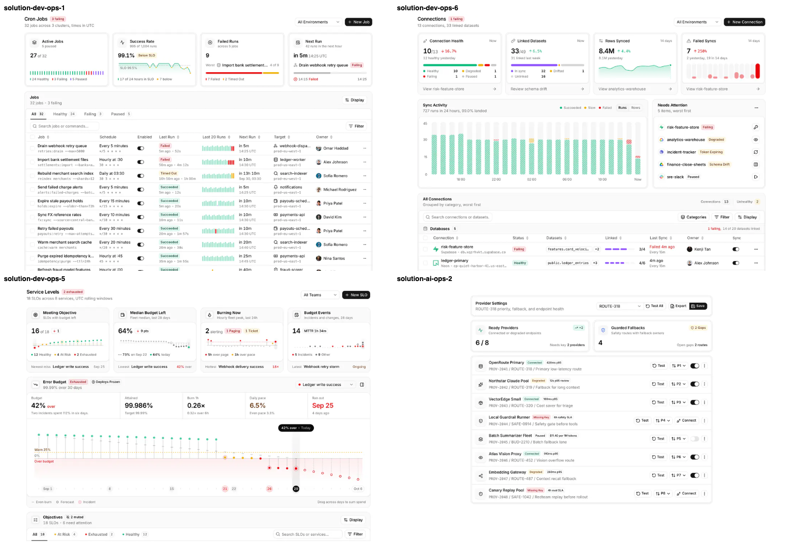
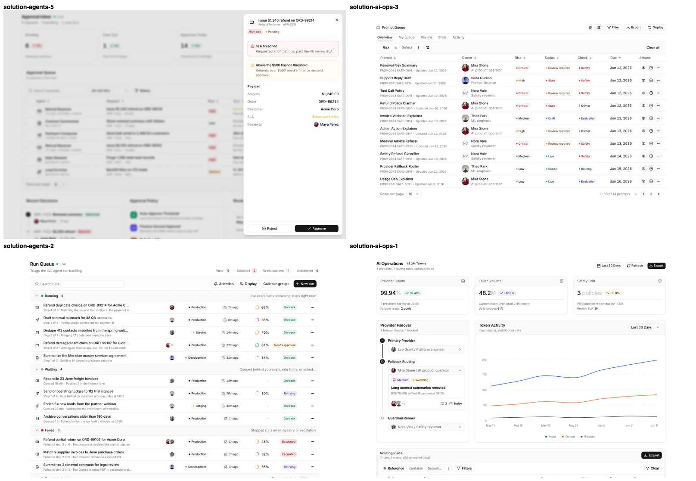

Sẽ đặt mọi trang Ops trong khung riêng có thanh bên chia nhóm (Giám sát · Xử lý · Quản trị), đủ 7 mục kể cả Hàng chờ duyệt; cổng Invest giữ khung cũ, phần chặn quyền vào Ops giữ nguyên.
Sẽ mở đầu mọi trang Ops bằng cùng một đầu trang, và sửa hai trang đang lệch: Chất lượng có tiêu đề nằm giữa trang, Thu thập có khối lồng trong phần tiêu đề.
Sẽ dựng từng trang từ đúng mẫu đã chọn trong bảng trang → mẫu (Tổng quan, Thu thập, Nguồn dữ liệu, Hàng chờ duyệt); phần mẫu không có dữ liệu thật thì bỏ, không làm giả; trang Chất lượng giữ bảng chuẩn hiện có.
Sẽ hỏi lại bằng hộp xác nhận trước khi xoá nhóm thu hay gỡ tài khoản Zalo (nói rõ số bài sẽ mất); bấm Huỷ thì không có gì xảy ra; mọi kết quả thao tác hiện bằng thông báo nổi.
Sẽ giữ nguyên mọi lời gọi tới máy chủ (duyệt tin, bật/tắt/thêm/xoá nhóm, tài khoản Zalo) — máy so với bản chụp trước khi sửa và bảng kỳ vọng viết tay.
Sẽ biến trang Thư viện thiết kế thành nơi trưng bày các mẫu dùng chung đang sống và danh sách mẫu dev-ops / ai-ops đã chọn, bỏ chữ kỹ thuật dành cho lập trình viên.
Sẽ chụp cả sáu trang ở nền sáng, nền tối và màn hẹp điện thoại: một tiêu đề mỗi trang, thanh bên thu thành nút menu trên điện thoại, không cuộn ngang, không chữ đè — và che sẵn tên nguồn thật, tên nhóm Zalo.
Sẽ ghi số đo 'sau đợt B1' vào tài liệu case study, thêm khung Ops và từng mẫu đã chọn vào danh mục dùng chung, cập nhật bản đồ trang.
Sẽ giữ trạng thái đúng ở các vùng viết lại: nút duyệt khoá khi đang gửi, bật/tắt lỗi thì quay về như cũ kèm báo lỗi, bảng nhóm Zalo có khung chờ và nút Thử lại, nút chỉ có biểu tượng có nhãn cho trình đọc màn hình.
Chặn mọi ngoại lệ lint giao diện còn sót ở cổng Ops — danh sách tồn đọng của Ops về 0 và không thêm ngoại lệ mới.
Chặn các kiểu tự vẽ tay mà lint không bắt: khung viền tự kẻ, ký tự ✓ ✕ ↻ dùng làm biểu tượng.
Chặn báo động giả của lint: ô nhập ẩn và hàm 'confirm' tự đặt tên không còn bị báo, còn hộp xác nhận thật của trình duyệt vẫn bị chặn.
Tóm phần hoãn/cắt: Những phần sau cố ý để đợt khác hoặc bỏ, để B1 không chạm cổng Invest và không bày tính năng giả:
Hoãn/cắt: KHÔNG làm lại trang Căn giá tốt, Đầu tư và bộ mô phỏng — đợt B5 (Căn giá tốt vẫn có mục trong thanh bên mới).
Hoãn/cắt: KHÔNG làm trạng thái đang tải/trống đầy đủ cho mọi bảng Ops — đợt B4; B1 chỉ làm ở vùng nó viết lại.
Hoãn/cắt: KHÔNG sửa đầu trang, ô số, bảng chuẩn và khung của cổng Invest — Invest không đổi.
Hoãn/cắt: KHÔNG đổi dữ liệu, câu truy vấn, quyền vào trang hay màu thương hiệu.
Hoãn/cắt: KHÔNG làm giả các phần mẫu chưa có dữ liệu hay đường ghi thật (biểu đồ đốt ngân sách, lịch sử 20 lần chạy, sửa lịch chạy, ghim trang, xuất CSV) — bỏ khỏi bản chuyển thể.
Hỏi-1 · Hỏi-1: ảnh bằng chứng của /ops/sources, /ops/collections, /ops/review được che chữ ở các cột tầng A (tên nguồn thật, tên nhóm Zalo, nội dung tin) bằng JS ngay trước khi chụp. — Ảnh evidence được commit và đẩy lên GitHub (repo private) — AGENTS.md luật 6: tầng A không rời máy local. — sai thì tốn: Không che thì tên nguồn thật và nội dung tin nằm trong lịch sử git trên GitHub, gỡ phải viết lại lịch sử. · khó-đảo — máy khuyên: Che chữ tầng A trước khi chụp, giữ bố cục; evidence ghi rõ 'đã che'. · lối khác: Chụp nguyên trạng và commit — ảnh trung thực hơn nhưng dữ liệu tầng A rời máy.
Hỏi-2 · Hỏi-2: khai feature_loop.suite_keys = [app, ui_lint_rules] cho mọi lượt chấm của kho. — Config chưa có suite_keys nên đường nền và S4 dừng; hai lệnh này là typecheck+lint app và test luật lint — phần đợt UI chạm. — sai thì tốn: Thêm collector/pipeline/agent vào suite thì mỗi lượt chấm lâu hơn và có thể đỏ vì việc ngoài đợt; bớt thì lượt chấm không chạy lint toàn app. — máy khuyên: [app, ui_lint_rules] — đúng phần đợt UI chạm, lần sau không hỏi lại. · lối khác: Thêm cả collector, pipeline, agent, data_api — phủ rộng hơn, mỗi lượt chậm thêm vài phút và đỏ vì việc của làn khác.
Hỏi-3 · Hỏi-3: phiên đăng nhập /ops cho bước chụp — Mạnh đăng nhập một lần trong ego lite (máy chụp ra tệp bằng ego-browser, đủ sáng/tối/390px). — PR #1 (tài khoản ops thử) chưa merge; ảnh evidence phải là tệp nên cần trình duyệt chụp ra tệp được và giữ phiên. — sai thì tốn: Đăng nhập ở Browser pane thì ảnh chỉ hiện trong khung chat, không thành tệp evidence cho trang Cổng 2. — máy khuyên: Mạnh đăng nhập ego lite tại http://localhost:3456/login khi máy báo tới bước chụp. · lối khác: Chờ PR #1 merge rồi máy tự đăng nhập bằng tài khoản thử — không cần người nhưng phụ thuộc lịch merge của phiên điều phối.
Hỏi-4 · Hỏi-4: MCP reui chưa nạp vào phiên này — mở lại (resume) phiên trước S3 để bước Kiểm chạy validate_usage và get_audit_checklist. — Bật enabledMcpjsonServers sau khi phiên mở; claude mcp list báo Connected nhưng công cụ mcp__reui__* không có trong phiên. — sai thì tốn: Không mở lại thì S3 đi đường dự phòng (trang .md của reui.io + API đọc từ file đã cài), hand-back ghi 'MCP not run'. — máy khuyên: Mở lại phiên (resume giữ nguyên ngữ cảnh) khi trả lời Cổng Phạm vi. · lối khác: Đi tiếp đường dự phòng — không tốn thao tác người, mất bước validate_usage/audit checklist tự động.
Hỏi-5 · Hỏi-5: cổng Ops dùng shell riêng chuyển thể app-shell-36 và dựng trang theo bảng 2b (Tổng quan = dev-ops-5, Thu thập = dev-ops-6 + lưới job dev-ops-1, Nguồn dữ liệu = ai-ops-2 + lưới dev-ops-6, Hàng chờ duyệt = agents-5; Chất lượng giữ InsightGrid/StatTiles); trong trang theo block, KPI và lưới là của block (ngoại lệ có tên của luật một-kiểu-UI cho Ops). — Chỉ đạo của Mạnh 2026-10-23 dùng block dev-ops / ai-ops + app-shell cho Ops; chọn từng block theo bestFor/whenNotToUse và ảnh thumbnail chính chủ. — sai thì tốn: Shell và block chọn sai thì đổi sau là dựng lại cả cổng Ops; ngoại lệ một-kiểu-UI làm Ops và Invest có hai dáng KPI/lưới. — máy khuyên: Duyệt nguyên bảng: app-shell-36 cho Ops (Invest giữ app-shell-30) và block theo từng trang như bảng 2b. · lối khác: Shell app-shell-26 theo IA cũ (cần dữ liệu cây nguồn → thành phố → phường chưa có), hoặc giữ InsightGrid/StatTiles toàn bộ (đúng một-kiểu-UI nhưng trái chỉ đạo dùng block).
Xác nhận xoá nhóm và gỡ tài khoản Zalo dùng AlertDialog theo mẫu c-alert-dialog-5, không dùng Dialog c-dialog-7. — Luật Owners của ReUI chỉ định AlertDialog cho xác nhận phá huỷ; Dialog cho phép click ngoài đóng. — sai thì tốn: Thấp — đổi giữa hai primitive cùng họ. — căn cứ: «modals `Dialog` (destructive confirms `AlertDialog`)» (.claude/skills/reui/SKILL.md)
KHÔNG làm: Trạng thái tải/trống/lỗi đầy đủ cho mọi vùng Ops để đợt B4; B1 chỉ làm trạng thái ở vùng nó thay mới (đo ở AC-11). — Kế hoạch Phần B giao riêng việc Skeleton trong Suspense và Empty kèm hành động cho mọi trang cho đợt B4. — sai thì tốn: Sau B1 các bảng Ops chưa viết lại vẫn dùng dòng trống mặc định của data-grid (không có nút hành động) cho tới B4. — căn cứ: «| **B4 Trạng thái** | `<Suspense>` + `PageSkeleton` cho mọi trang có vùng dữ liệu; `Empty` + hành động;» (docs/superpowers/plans/2026-10-22-ui-standards-reui.md)
review-card.tsx và trang /ops/review làm SAU CÙNG, chỉ khi nhánh feat/enrich-qua-de-xuat đã vào main và main mới đã merge vào nhánh B1; các trang Ops còn lại làm trước. — Phiên điều phối báo enrich (T3, merge trước A và B1) sửa review-card.tsx, route decide và thêm app/tests/review-card.test.tsx. — sai thì tốn: Dọn review-card trên bản cũ thì xung đột với enrich khi merge; chờ thì AC-2/3/5/6/11 phần Duyệt tin chỉ chấm được sau khi enrich vào main. — lối khác chết vì: Sửa review-card song song với enrich tạo xung đột trên cùng tệp mà phiên điều phối đã yêu cầu tránh.
Bỏ OpsSection và việc đặt toolbar nhóm Zalo ở OpsSection: vùng của các trang theo block dùng khung và toolbar sẵn có của block. — Block Solutions đã có khung Frame, tiêu đề vùng và toolbar riêng; thêm OpsSection là kiểu khung thứ hai. — sai thì tốn: Thấp — OpsSection chưa được viết. — lối khác chết vì: Giữ OpsSection bọc vùng của block tạo tiêu đề kép và trái luật chuyển thể chỉ đổi dữ liệu/chữ/prop.
Tạo nhóm thu theo luồng tạo kết nối của dev-ops-6 (rút gọn còn nguồn, URL/key, tên) thay cho câu hỏi Dialog hay inline. — Trang Nguồn dữ liệu dựng từ dev-ops-6 nên luồng tạo phải lấy từ phần tử block đã có. — sai thì tốn: Luồng tạo của block dài hơn form cũ một bước; rút gọn thì lệch nhẹ bản gốc. — căn cứ: «Need a variant (empty / loading / expanded)? Derive it from an element the block already has.» (.claude/skills/reui/rules/adapting.md)
Nhóm Zalo của tài khoản đang chọn hiện trong bản chuyển thể ai-ops-2 (hàng tài khoản mở ra lưới nhóm), không dùng OpsSection + InsightGrid. — ai-ops-2 là khung của mục tài khoản Zalo; lưới nhóm là chi tiết của hàng tài khoản. — sai thì tốn: Lưới nhóm dài (hàng trăm nhóm) trong khung hàng có thể chật — khi đó tách thành vùng riêng dưới khung. — lối khác chết vì: OpsSection đã bỏ; đặt lưới nhóm ngoài khung ai-ops-2 làm mục tài khoản Zalo có hai khung.
KHÔNG làm: /ops/deals giữ ở đợt B5 dù khoá đã gỡ; B1 chỉ thêm mục của nó vào nav Ops mới. — Kế hoạch Phần B giao ops/deals cho B5; trang là bản ghi nghiệp vụ, ứng viên là nhóm data-grid/base chứ không phải Solutions. — sai thì tốn: Trang Căn giá tốt nằm trong shell mới nhưng còn dáng cũ cho tới B5. — căn cứ: «| **B5 Phần còn lại** | `ops/deals`, `dau-tu` hoặc chỗ thay nó, `investment-simulator`, nav (`/ops/review`);» (docs/superpowers/plans/2026-10-22-ui-standards-reui.md)
giữ cỡ — 12 tiêu chí vì shell Ops (AC-3) và block theo trang (AC-5) là chỉ đạo mới của Mạnh cho chính đợt B1, còn AC-12 là lời hứa trạng thái của các vùng B1 viết lại; tách ra thì vùng ship không có thước. — Chỉ đạo 2026-10-23 thêm shell + block vào B1; gap-probe P1 đòi đo trạng thái các vùng viết lại. — sai thì tốn: Hợp đồng ở trần cho phép (12), lượt chấm có 16 eval. — lối khác chết vì: Tách shell hoặc block sang vòng khác thì B1 phải dựng trang trên shell cũ rồi dựng lại lần hai khi đổi shell.
Khoá cài block Pro đã có: Mạnh khai REUI_LICENSE_KEY ở checkout chính, phiên điều phối chép app/.env.local sang worktree B1; npx shadcn view @reui/app-shell-36, solution-dev-ops-5, solution-dev-ops-6, solution-ai-ops-2 trả đủ tệp. — Hỏi-6 đã được người trả lời bằng việc làm (khoá đã khai), không còn là câu hỏi. — sai thì tốn: Nếu khoá thiếu quyền một block (vd solution-agents-5) thì bước cài block đó dừng, các trang khác không ảnh hưởng. — lối khác chết vì: Câu hỏi đã có lời đáp thực tế (khoá có trong worktree, view block chạy được); giữ dạng câu hỏi là hỏi lại điều đã xong.
KHÔNG làm: bỏ coverage-scan — spec mục 5 B1 đã liệt kê đóng các việc của đợt; Coverage là ma trận trang × việc ghi tay từ spec. — Không gian AC là danh sách đóng do spec đã duyệt cấp (6 trang × 8 việc), không phải bài toán liệt kê mở. — sai thì tốn: Đổi lại không có bằng chứng độ phủ từ quét hình thái — việc ngoài spec mà B1 lẽ ra phải làm có thể lọt.
KHÔNG làm: bỏ design-pass — đợt dọn không có thiết kế mới: khuôn đích là PageHeader/InsightGrid/StatTiles đang chạy ở Invest (/yield, /listing), và /ops cần phiên đăng nhập chưa có (Hỏi-3). — Spec B1 cấm đổi style/brand và chỉ cho đổi dữ liệu/chữ/prop; bản bấm được của các khuôn đã sống ở cổng Invest. — sai thì tốn: Gate 1 duyệt UI bằng chữ — mất khoảnh khắc visual trước duyệt; ảnh ba chế độ chỉ có ở Cổng Bằng chứng (E13).
KHÔNG làm: bỏ eval design.gate tĩnh (CT1) — trang /ops cần đăng nhập, capture HTML không phiên chỉ ra trang /login; sàn a11y/tương phản đo bằng ui-check E13 trên bản chạy. — design-gate.mjs đọc HTML đã render; HTML của /ops chỉ có khi có cookie phiên. — sai thì tốn: Không có máy quét slop/a11y tự động — tương phản tối và trùng lặp chỉ được mắt tác tử ui-check soi.
Không chạy quét độ phủ tự động — đề bài B1 và chỉ đạo dùng mẫu dev-ops/ai-ops đã liệt kê đóng các việc; bảng dưới đối chiếu từng việc với từng trang.
Bảng trang × việc: mỗi ô có dấu ✓ được ít nhất một tiêu chí đo.
Cột: sáu trang Ops và tiêu chí đo.
Khung Ops riêng và thanh bên chia nhóm ở cả sáu trang — AC-3 (đọc mã) và AC-10 (ảnh chụp).
Trang dựng từ mẫu đã chọn: Tổng quan, Thu thập, Hàng chờ duyệt, Nguồn dữ liệu; Chất lượng cố ý giữ bảng chuẩn — AC-5.
Bảng tự kẻ chuyển sang bảng của mẫu hoặc bảng chuẩn — AC-1 và AC-5.
Nút, ô nhập, ô chọn tự dựng chuyển sang thành phần chuẩn ở Duyệt tin và Nguồn dữ liệu — AC-1.
Hộp xác nhận của trình duyệt thay bằng hộp xác nhận chuẩn ở hai chỗ của Nguồn dữ liệu — AC-6.
Dòng thông báo tự viết thay bằng thông báo nổi ở Duyệt tin và Nguồn dữ liệu — AC-6.
Nhãn trạng thái tự tô màu thay bằng nhãn chuẩn ở cả sáu trang — AC-1 và AC-2.
Đầu trang chung ở cả sáu trang — AC-4 và AC-10.
Hai lỗi bố cục ở Thu thập và Chất lượng — AC-4 và AC-10.
Trang Thư viện thiết kế thành trang trưng bày — AC-9.
Lời gọi máy chủ không đổi ở Duyệt tin và Nguồn dữ liệu — AC-7.
Ảnh ba chế độ (đã che dữ liệu nhạy cảm) cho cả sáu trang — AC-10.
Trạng thái đúng và nhãn cho trình đọc màn hình ở vùng viết lại — AC-12.
Hai sửa của luật lint — AC-8.
Số đo sau đợt, danh mục mẫu và bản đồ trang — AC-11.
P0 · Ba lựa chọn máy tự quyết chưa đủ căn cứ, nặng nhất là sửa bảng dùng chung với cổng Invest công khai. Đã xử: không sửa thành phần dùng chung nào của Invest; các lựa chọn còn lại nay đi theo mẫu đã chọn hoặc thành câu hỏi.
P0 · Ảnh bằng chứng có thể lộ tên nguồn thật và tên nhóm Zalo lên GitHub. Đã xử: luôn che trước khi chụp, máy tự kiểm ảnh không còn tên thật; Hỏi-1 vẫn để anh xác nhận.
P1 · Các trạng thái hứa trong thiết kế (khoá nút khi gửi, quay về khi lỗi, chờ, thử lại) chưa có tiêu chí đo. Đã xử: thêm tiêu chí trạng thái (nay là AC-12) và một phép kiểm đọc mã.
P1 · Phép kiểm 'mọi thông báo qua thông báo nổi' chỉ đếm dòng nhập thư viện, đổi tên biến là lọt. Đã xử: đo theo quan hệ — không còn chữ thông báo nào hiện từ biến trạng thái.
P1 · Phép so lời gọi máy chủ tự so với chính nó. Đã xử: thêm bảng kỳ vọng viết tay từ thiết kế; nay so theo địa chỉ gọi vì mã có thể dời sang tệp mẫu.
Duyệt hay trả hồ sơ này — làm gì: đọc hai khối SẼ làm / KHÔNG làm và các cờ chú ý ở trên; ở đâu: trả lời ngay trong phiên đang trình thẻ; trả lời dạng: «Duyệt» hoặc «Sửa: nêu điều cần đổi».
Hỏi-1 — Hỏi-1: ảnh bằng chứng của /ops/sources, /ops/collections, /ops/review được che chữ ở các cột tầng A (tên nguồn thật, tên nhóm Zalo, nội dung tin) bằng JS ngay trước khi chụp.: máy khuyên Che chữ tầng A trước khi chụp, giữ bố cục; evidence ghi rõ 'đã che'.; «duyệt» là nhận khuyến nghị, chọn lối khác thì trả lời «sửa: Hỏi-1 = <lối>».
Hỏi-2 — Hỏi-2: khai feature_loop.suite_keys = [app, ui_lint_rules] cho mọi lượt chấm của kho.: máy khuyên [app, ui_lint_rules] — đúng phần đợt UI chạm, lần sau không hỏi lại.; «duyệt» là nhận khuyến nghị, chọn lối khác thì trả lời «sửa: Hỏi-2 = <lối>».
Hỏi-3 — Hỏi-3: phiên đăng nhập /ops cho bước chụp — Mạnh đăng nhập một lần trong ego lite (máy chụp ra tệp bằng ego-browser, đủ sáng/tối/390px).: máy khuyên Mạnh đăng nhập ego lite tại http://localhost:3456/login khi máy báo tới bước chụp.; «duyệt» là nhận khuyến nghị, chọn lối khác thì trả lời «sửa: Hỏi-3 = <lối>».
Hỏi-4 — Hỏi-4: MCP reui chưa nạp vào phiên này — mở lại (resume) phiên trước S3 để bước Kiểm chạy validate_usage và get_audit_checklist.: máy khuyên Mở lại phiên (resume giữ nguyên ngữ cảnh) khi trả lời Cổng Phạm vi.; «duyệt» là nhận khuyến nghị, chọn lối khác thì trả lời «sửa: Hỏi-4 = <lối>».
Hỏi-5 — Hỏi-5: cổng Ops dùng shell riêng chuyển thể app-shell-36 và dựng trang theo bảng 2b (Tổng quan = dev-ops-5, Thu thập = dev-ops-6 + lưới job dev-ops-1, Nguồn dữ liệu = ai-ops-2 + lưới dev-ops-6, Hàng chờ duyệt = agents-5; Chất lượng giữ InsightGrid/StatTiles); trong trang theo block, KPI và lưới là của block (ngoại lệ có tên của luật một-kiểu-UI cho Ops).: máy khuyên Duyệt nguyên bảng: app-shell-36 cho Ops (Invest giữ app-shell-30) và block theo từng trang như bảng 2b.; «duyệt» là nhận khuyến nghị, chọn lối khác thì trả lời «sửa: Hỏi-5 = <lối>».
Trả lời mẫu (một dòng, điền vào chỗ trống): «duyệt hay sửa: ___»
Máy khuyên: khung app-shell-36 cho Ops (Invest giữ khung cũ) và mẫu theo từng trang dưới đây. Duyệt thẻ là nhận cả bảng; muốn đổi thì trả lời «sửa: Hỏi-5 = …».
| Trang | Mẫu chọn | Vì sao |
|---|---|---|
| Khung cổng Ops | app-shell-36 Observability Console | Thanh bên chia nhóm cho 7 trang phẳng; app-shell-26 (IA cũ) cần cây nguồn → thành phố → phường chưa có |
| Tổng quan | solution-dev-ops-5 (SLO) | Độ tươi theo nguồn là bài toán đạt/quá hạn SLO; bỏ biểu đồ đốt ngân sách (chưa có số theo ngày) |
| Thu thập | solution-dev-ops-6 + lưới job của solution-dev-ops-1 | Sức khoẻ nguồn, luồng 7 ngày, việc cần chú ý; máy chạy theo lịch = lưới cron |
| Nguồn dữ liệu | solution-ai-ops-2 + lưới của solution-dev-ops-6 | Tài khoản Zalo = hàng kết nối có công tắc và "Connect" (QR); nhóm thu = kết nối theo nguồn |
| Hàng chờ duyệt | solution-agents-5 (Action Approval Inbox) | Hàng chờ con người duyệt đề xuất AI, xem chi tiết rồi Duyệt/Từ chối — làm sau khi nhánh enrich vào main |
| Chất lượng dữ liệu | giữ bảng + ô số chuẩn | Không mẫu nào khớp: bảng đối chiếu AirDNA là bảng cột riêng |
| Căn giá tốt | để đợt B5 | Bản ghi nghiệp vụ → nhóm mẫu bảng cơ bản, không phải dev-ops |
| Thư viện thiết kế | không mẫu — trang trưng bày | Trưng bày mẫu dùng chung và các mẫu đã chọn ở bảng này |
Đánh đổi: trong các trang theo mẫu, ô số và bảng là của chính mẫu nên Ops và Invest có hai dáng ô số/bảng (ngoại lệ có tên của luật "một loại UI, một cách làm").
Bản đồ trang → vùng:

Ảnh chính chủ ReUI — khung (26 · 36 · 10 · 27):

Mẫu dev-ops (cron jobs · data connections · SLO) và ai-ops provider:

Mẫu hàng chờ duyệt (agents-5 · ai-ops-3 · agents-2 · ai-ops-1):
